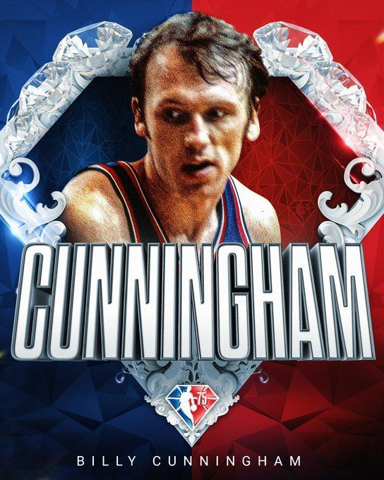
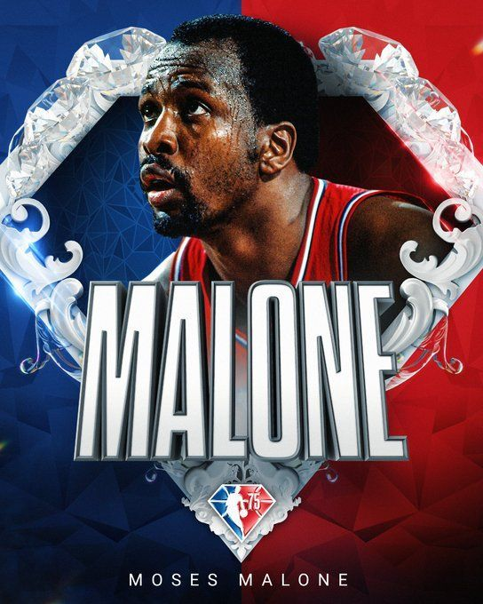
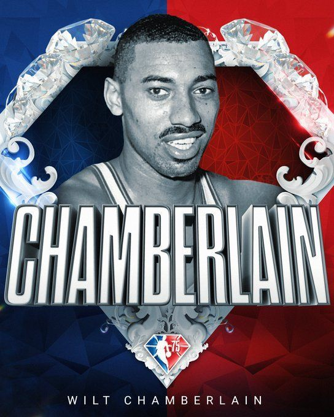
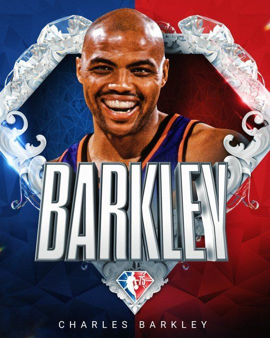

The Hall of fames

Naismith Memorial Basketball Hall of Fame
The Naismith Memorial Basketball Hall of Fame is an American history museum and hall of fame, located at 1000 Hall of Fame Avenue in Springfield, Massachusetts.
It serves as basketball's most complete library, in addition to promoting and preserving the history of basketball. Dedicated to Canadian-American physician James Naismith, who invented the sport in Springfield, the Hall of Fame inducted its first class in 1959 before opening its first facility on February 17, 1968.


![ Billy Cunningham William John Cunningham (born June 3, 1943) is an American former professional basketball player and coach, who was nicknamed the Kangaroo Kid for his leaping and record-setting rebounding abilities. He spent a total of 17 seasons with the NBA's Philadelphia 76ers (nine as player, eight as coach), and two seasons as a player with the Carolina Cougars of the ABA. One of basketball's all-time greats, Cunningham was elected to the Naismith Memorial Hall of Fame and honored by selection to both the NBA's 50th and 75th Anniversary Teams as one of its legendary players, as well as to the ABA All-Time Team. He was All-ACC, the ACC Player of the Year, and an All-American in college, later named to the ACC 50th Anniversary men's basketball team honoring the fifty best players in Atlantic Coast Conference history. As a professional he was selected to the NBA All-Rookie First Team, an NBA All-Star, All-NBA First and Second Team, an ABA All-Star, All-ABA First Team, and the ABA Most Valuable Player. He was an NBA champion both as a player (1967) and as a coach (1983).](assets/img/194265f5-e0b5-4342-8ee1-2b496b094e40.jpeg){kind=link}
![ Moses Malone Moses Eugene Malone (March 23, 1955 – September 13, 2015) was an American professional basketball player who played in both the American Basketball Association (ABA) and the National Basketball Association (NBA) from 1974 through 1995. A center, he was named the NBA Most Valuable Player (MVP) three times, was a 12-time NBA All-Star and an eight-time All-NBA Team selection. Malone led the Philadelphia 76ers to an NBA championship in 1983, winning both the league and Finals MVP. He was inducted into the Naismith Memorial Basketball Hall of Fame in his first year of eligibility in 2001. Widely regarded as one of the greatest players in the sport's history,[2] Malone is nonetheless seen as one of the most underrated players in NBA history.](assets/img/98719cbf-9d2a-4a17-a667-ca65b89b202e.jpeg){kind=link}
![ Wilt Chamberlian Wilton Norman Chamberlain (/ˈtʃeɪmbərlɪn/; August 21, 1936 – October 12, 1999) was an American professional basketball player who played as a center and is widely regarded as one of the greatest players in the sport's history. He played for the Philadelphia/San Francisco Warriors, the Philadelphia 76ers, and the Los Angeles Lakers of the National Basketball Association (NBA). Chamberlain played for the Kansas Jayhawks and the Harlem Globetrotters before joining the NBA, and he stood 7 ft 1 in (2.16 m) tall.](assets/img/b0aaefb0-8171-4678-86d6-aef1ccf0b86d.jpeg){kind=link}
![ Charles Barkley Charles Wade Barkley (born February 20, 1963) is an American former professional basketball player and current television analyst. Nicknamed "Sir Charles", "Chuck", and "the Round Mound of Rebound", Barkley played 16 seasons in the National Basketball Association (NBA) for three teams. Though shorter than the typical power forward, he used his strength and aggressiveness to become one of the NBA's most dominant rebounders. He was a versatile player who had the ability to score, create plays, and defend. He was an 11-time NBA All-Star, an 11-time member of the All-NBA Team, and the 1993 NBA Most Valuable Player (MVP). During the NBA's 50th anniversary, Barkley was named one of the league's 50 Greatest Players. He was again named to the 75 Greatest Players in NBA History for the league's 75th anniversary.](assets/img/ffb56b54-6acb-4290-ab94-7429a99249e6.jpeg){kind=link}